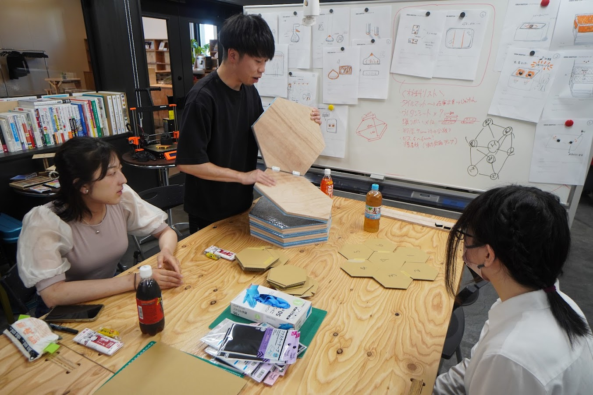

3日目｜発表、フィードバック
7月9日（日）
8：30～ 9：30 朝食
9：30～10：00 準備・移動
10：00～12：30 午前ワーク（作品修正・発表準備）
12：30～13：30 昼食
13：30～14：30 発表・フィードバック
14：30～15：00 帰り支度
15：30～16：30 栗山町～新千歳空港へ移動、到着し次第解散
午前ワーク（作品修正・発表準）

発表資料づくり
子どもの遊び道具製作
3人で役割分担をしてマット作製と子どもの遊び道具（プレスフィット）作製に分かれて作業を行った。
途中から発表資料づくりも合わせて時間内に間に合うようにする。
発表・フィードバック
₂泊3日を振り返って
、